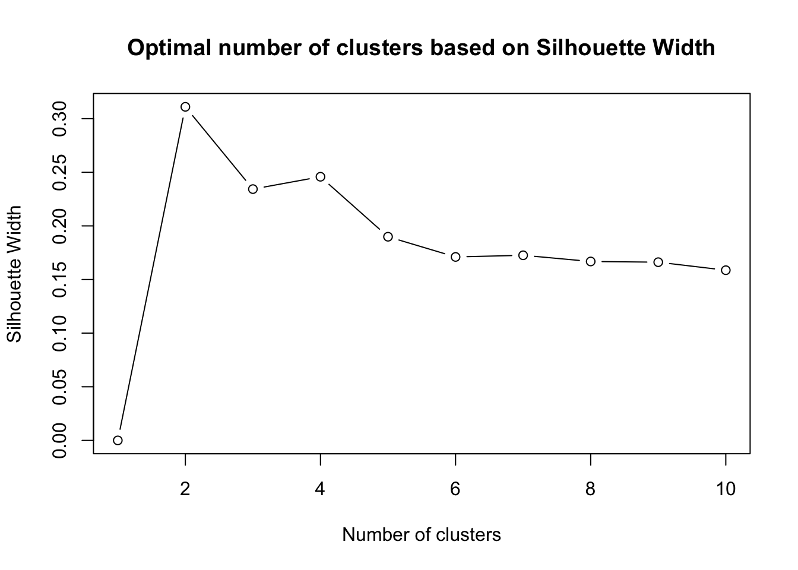
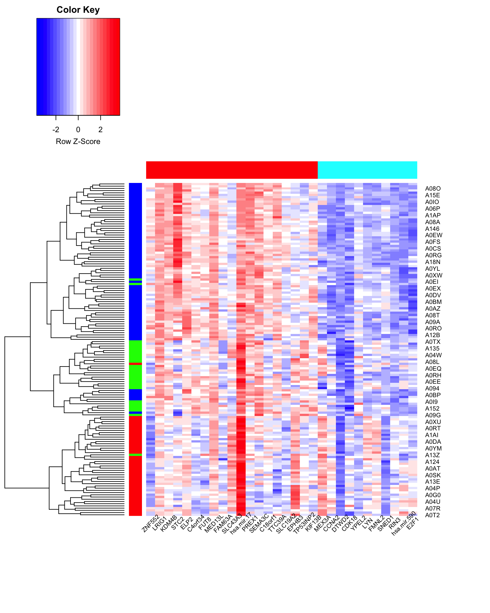

# List of packages to be installed
packages <- c("ggplot2", "randomForest", "blockForest","cluster","gplots","mclust")
# Check and install missing packages
new_packages <- packages[!(packages %in% installed.packages()[,"Package"])]
if(length(new_packages)) install.packages(new_packages, dependencies = TRUE, type = "binary")
# Load the libraries
library(ggplot2)
library(randomForest)
library(blockForest)Random Forest for Data Integration
Setup the environment
Introduction
In classical data integration, we would like to use information across different modalities (eg., transcriptome, proteome and metabolome) to gain more comprehensive insights into the biological systems under study. This type of data can be used for an array of different purposes including but not limited to molecular classification, stratification of patients, outcome predictions and understanding of regulatory processes such as gene regulation and pathway aAnalysis.
In this specific context, we are going to focus on outcome prediction modeling and segmentation, which are promising because each type of omics data may contribute valuable information for the prediction of phenotypic outcomes. More specifically we are going to focus on supervised and unsupervised data integration wherein we have obtained patient data for which several types of omics data are available for the same samples (e.g. patients). We are going to use Random Forest to model the complex relationships between various data types and the outcomes. Random Forest is particularly suited for this task due to their ability to handle high-dimensional, heterogeneous data and capture intricate, non-linear interactions.
Random Forest
Before diving into data integration, we first need a recap for Random Forest and its foundational concepts (for more in-depth review of Random Forest, see here). Random Forest is an ensemble learning method that operates by constructing a multitude of decision trees at training time and outputting the class that is the mode of the classes (classification) or mean prediction (regression) of the individual trees.
Decision Trees
Random Forest is built upon decision trees, which are tree-like models of decisions based on features’ values leading to a prediction about the target variable.
graph TB A["Is feature X > 5?"] -- Yes --> B["Is feature Y > 7?"] B -- Yes --> C["Class A"] B -- No --> D["Class B"] A -- No --> E["Is feature Z > 3?"] E -- Yes --> F["Class C"] E -- No --> G["Class D"]
Each node in the tree corresponds to a feature, and the splitting of nodes is based on measures like entropy or Gini impurity for classification, and variance reduction for regression.
Bagging & Feature Randomness
Random Forest improves the performance and accuracy of decision trees through bagging. It creates multiple subsets of the dataset using bootstrap sampling, and a decision tree is built for each subset. The predictions of all trees are then aggregated through majority voting (classification) or averaging (regression) to give the final output.
In addition to data sampling, Random Forest selects a random subset of features at each split, introducing feature randomness, and resulting in diverse trees. This randomness ensures that the model is robust and less prone to overfitting.
graph LR RF["Data"] --> B["Bagging"] B --> S["Subsets of Dataset"] B --> FR["Feature Randomness"] S --> BS["Bootstrap Sampling"] FR --> DT BS --> DT["Diverse Trees (Random Forest)"]
Advantages of Random Forest
Random Forest is known for its robustness and high accuracy, efficiently handling large datasets with higher dimensionality. It can manage missing values and can also provides estimates of feature importance, enabling insights into the driving factors behind predictions. The algorithm is less likely to overfit than individual decision trees, thanks to the diversity introduced by training on different subsets of data and feature randomness. Finally,Random Forest doesn’t make any underlying assumptions about the distribution or the functional form of the data. It is this characteristic that imparts Random Forest with significant flexibility, making it adaptable to a wide array of data distributions and structures.
Perform Random Forest in R
There are many packages for random forest. We have been using randomForest package in R that does a decent job and is fast enough for most of the applications. There are other implementations that you can check out such as ranger that is even faster. We here go through randomForest package briefly.
Data
Our data has to be in a data.frame where features are in the columns and samples in the rows. The categorical variables should preferably be factor. For now we are going to use TCGA dataset from mixOmics.
This data set is a small subset of the full data set from The Cancer Genome Atlas that can be analysed with the DIABLO framework. It contains the expression or abundance of three matching omics data sets: mRNA, miRNA and proteomics for 150 breast cancer samples (Basal, Her2, Luminal A) in the training set, and 70 samples in the test set. The test set is missing the proteomics data set.
# Download the dataset
download.file("https://github.com/mixOmicsTeam/mixOmics/raw/master/data/breast.TCGA.rda", destfile = "TCGA.rda")
# load the data
load("TCGA.rda")This data has already been split into a list with two elements. Training and testing. Each element itself is a list of four elements. Three elements are the actual datasets and one is the cancer subtypes.
str(breast.TCGA)List of 2
$ data.train:List of 4
..$ mirna : num [1:150, 1:184] 11.8 12.9 12.3 12 13.4 ...
.. ..- attr(*, "dimnames")=List of 2
.. .. ..$ : chr [1:150] "A0FJ" "A13E" "A0G0" "A0SX" ...
.. .. ..$ : chr [1:184] "hsa-let-7a-1" "hsa-let-7a-2" "hsa-let-7a-3" "hsa-let-7b" ...
..$ mrna : num [1:150, 1:200] 4.36 1.98 1.73 4.36 2.45 ...
.. ..- attr(*, "dimnames")=List of 2
.. .. ..$ : chr [1:150] "A0FJ" "A13E" "A0G0" "A0SX" ...
.. .. ..$ : chr [1:200] "RTN2" "NDRG2" "CCDC113" "FAM63A" ...
..$ protein: num [1:150, 1:142] 0.0491 -0.08 -0.0328 -0.2053 0.0602 ...
.. ..- attr(*, "dimnames")=List of 2
.. .. ..$ : chr [1:150] "A0FJ" "A13E" "A0G0" "A0SX" ...
.. .. ..$ : chr [1:142] "14-3-3_epsilon" "4E-BP1" "4E-BP1_pS65" "4E-BP1_pT37" ...
..$ subtype: Factor w/ 3 levels "Basal","Her2",..: 1 1 1 1 1 1 1 1 1 1 ...
$ data.test :List of 3
..$ mirna : num [1:70, 1:184] 12.8 13.9 12.9 12.4 13.1 ...
.. ..- attr(*, "dimnames")=List of 2
.. .. ..$ : chr [1:70] "A54N" "A2NL" "A6VY" "A3XT" ...
.. .. ..$ : chr [1:184] "hsa-let-7a-1" "hsa-let-7a-2" "hsa-let-7a-3" "hsa-let-7b" ...
..$ mrna : num [1:70, 1:200] 1.19 2.73 3.05 2.7 3.14 ...
.. ..- attr(*, "dimnames")=List of 2
.. .. ..$ : chr [1:70] "A54N" "A2NL" "A6VY" "A3XT" ...
.. .. ..$ : chr [1:200] "RTN2" "NDRG2" "CCDC113" "FAM63A" ...
..$ subtype: Factor w/ 3 levels "Basal","Her2",..: 1 1 1 1 1 1 1 1 1 1 ...Now we can go ahead and do the modeling.
# set the seed for reproduciblity
set.seed(123)
# run the model
rf_mirna <- randomForest::randomForest(breast.TCGA$data.train$mirna,
y = breast.TCGA$data.train$subtype,keep.forest=T)Let’s have a look at the results
print(rf_mirna)
Call:
randomForest(x = breast.TCGA$data.train$mirna, y = breast.TCGA$data.train$subtype, keep.forest = T)
Type of random forest: classification
Number of trees: 500
No. of variables tried at each split: 13
OOB estimate of error rate: 15.33%
Confusion matrix:
Basal Her2 LumA class.error
Basal 40 2 3 0.11111111
Her2 5 14 11 0.53333333
LumA 0 2 73 0.02666667The output tells us that the model was initiated with the randomForest() function, using the miRNA data as predictors (x) and the cancer subtypes as the response (y). It is a classification type model, as indicated.
The model is composed of 500 trees (“Number of trees: 500”), and at each decision split in the trees, 13 variables or features were randomly selected and assessed to identify the optimal split (“No. of variables tried at each split: 13”).
The Out-Of-Bag (OOB) error estimate is 15.33%. OOB error is a unique feature of Random Forest; it provides an internal validation mechanism. During the training of each tree, a subset of the data is left out (not sampled) and used to validate the tree, giving an error estimate. This OOB error is particularly useful as it offers an unbiased performance metric without the need for cross-validation or a separate test set. In this case, the 15.33% OOB error rate means the model is expected to misclassify approximately 15.33% of new samples, offering a glimpse into the model’s accuracy without a separate validation set.
The confusion matrix for the training set reveals detailed class-specific performance. For the ‘Basal’ subtype, the model achieved a class error rate of 11.11%, with 40 correct predictions. The ‘Her2’ subtype encountered a higher error rate of `r 53.33%, resulting from a substantial number of misclassifications. In contrast, the ‘LumA’ subtype exhibited impressive accuracy, with a mere 2.67% error rate and 73 correct classifications.
We can go ahead and check the performance of the model on the test data.
predictions_mirna <- randomForest:::predict.randomForest(rf_mirna,
breast.TCGA$data.test$mirna)
# Create a confusion matrix
conf_matrix <- table(breast.TCGA$data.test$subtype, predictions_mirna)
# Print the confusion matrix
print(conf_matrix) predictions_mirna
Basal Her2 LumA
Basal 19 1 1
Her2 3 6 5
LumA 0 2 33# Calculate the class error rates
class_error <- 1 - diag(conf_matrix) / rowSums(conf_matrix)
# Calculate the overall error rate
overall_error_rate <- (sum(conf_matrix) - sum(diag(conf_matrix))) / sum(conf_matrix)
# Print class error rates
print(class_error) Basal Her2 LumA
0.09523810 0.57142857 0.05714286 # Print overall error rate
print(overall_error_rate)[1] 0.1714286So we have about 17.14% error rate in miRNA. How much error we have in mRNA?
Fit a model for mRNA and check the error on the test set.
Hyperparameters
There are some parameters that need tuning to get better performance from Random Forest.
Two of the most important parameters are:
1. Number of Trees
This parameter specifies the total count of trees in the forest. Each tree contributes to the final decision, making a vote for classifying an object or predicting a continuous value.
Tuning Guidance:
A larger number of trees typically offers better learning capability and is less likely to overfit, but it also means higher computational cost.
It’s often recommended to try a range of values to find a good balance between performance and computational efficiency. There’s usually a threshold beyond which increasing the number of trees doesn’t offer significant benefits in terms of prediction accuracy.
A common practice is to start with a moderate number of trees and increase it until the error rate stabilizes.
2. Number of Features Considered at Each Split:
This parameter determines the maximum number of features considered for splitting at each node. Random Forest involves randomly selecting a subset of features at each split, introducing diversity among the trees and making the model robust.
Tuning Guidance:
For classification, it’s common to start with the square root of the total number of features. For regression, using one-third of the total features is a common starting point.
Tuning this parameter can help manage the bias-variance trade-off. A smaller number of features can increase the diversity among trees (reducing variance) but might also introduce bias. Conversely, considering more features can reduce bias but might lead to overfitting (increased variance).
Experimenting with different values through techniques like grid search or random search can help identify the optimal number of features for your specific dataset and problem.
We are going to skip tuning for now.
Data Integration using Random Forests
One of the major issues that needs to be addressed when it comes to data integration is data distribution. Biological data come with different distributions and that make it unsuitable to simply concatenate RNASeq and proteomics data and perform a regression or classification for most of the methods. However, as mentioned before Random Forest does not make any assumptions about the data distribution. because of this, it is possible to merge the data and perform the analysis on the entire data.
This is another task for you. Merge the mRNA and miRNA data, do the modelling using Random Forest and calculate the performance on the merged test data.
One of the issues with naively concatenating the datasets and do Random Forest is that data views that have fewer variables are underrepresented in the variable splitting. This means that for example if we are to combine clinical with 20 variables and methylation data with 2 million sites, the clinical variables will have a very little chance of being selected for split in each tree. Another issue is that even if we have the data views with similar sizes, one data view can have significantly higher information content that others. It is reasonable to give more priority to the modalities that can give us more accurate predictions. blockForest is the name of one of the algorithms that allows us to take into account the block stucture of the data in an intuitive way leading to much more sound algorithm that simply concatenating the data.
blockForest
BlockForest is a machine learning technique specifically tailored for handling multi-omics data. In BlockForest, the data is divided into different “blocks,” each representing a different type of omics data.
How Does BlockForest Work?
- Block Selection:
- The first step in BlockForest involves randomly selecting a subset of all available blocks of data. Each block is chosen with a probability of 0.5. If no block is selected, the process is repeated until at least one block is chosen.
\[ P(\text{selecting block } m) = 0.5, \quad \forall m \in M \] 2. Variable Sampling:
After the blocks are selected, variables from these blocks are sampled. The number of variables sampled from each block is proportional to the square root of the total number of variables in that block.
\[ \text{Sampled variables from block } m = \sqrt{p_m}, \quad \forall m \in \text{selected blocks} \] 3. Split Point Selection with Weights:
The next step involves selecting split points for creating decision trees, similar to the random forest algorithm. However, in BlockForest, the split criterion values are weighted using block-specific weights.
If (\(w_m\)) is the weight for block (\(m\)), and (\(SC_m\)) is the split criterion value for a potential split point in block (\(m\)), the weighted split criterion value is calculated as:
\[ \text{Weighted SC} = \max(w_m \times SC_m), \quad \forall m \in \text{selected blocks} \]
The split point chosen is the one that gives the highest weighted split criterion value.
- Tree Construction:
- Decision trees are then constructed using the selected split points. Each tree in the forest is built using a different subset of the data and variables, leading to a diverse set of trees.
- Prediction:
- For prediction, each tree in the BlockForest votes, and the final prediction is made based on the majority vote.
So by randomly selecting blocks and variables, BlockForest ensures a diverse set of trees, leading to a more robust model. It ensures that each block of omics data is adequately represented.
Parameter Tuning
Tuning parameters in BlockForest is crucial to optimize the model’s performance. Each block has associated tuning parameters, and these need to be optimized to ensure the model is as accurate and generalizable as possible.
Here’s how the tuning is done:
- Generation of Random Sets:
- Generate \(N_{\text{sets}}\) random sets of \(M\) tuning parameter values.
- Construct a forest with a predefined number of trees using each set of tuning parameter values.
- Record the out-of-bag prediction error for each forest.
Mathematically, for each iteration \(i\), a random set \(\Lambda_i\) of \(M\) tuning parameter values is generated:
\[ \Lambda_i = \{ \lambda_{i1}, \lambda_{i2}, \ldots, \lambda_{iM} \}, \quad i = 1, \ldots, N_{\text{sets}} \]
- Selection of Optimal Set:
- Select the set of tuning parameter values that resulted in the smallest out-of-bag prediction error.
The optimal set \(\Lambda^*\) is given by:
\[ \Lambda^* = \arg\min_{\Lambda_i} \text{Error}(\Lambda_i), \quad i = 1, \ldots, N_{\text{sets}} \]
where \(\text{Error}(\Lambda_i)\) is the out-of-bag prediction error associated with the \(i\)-th set of tuning parameter values.
Performing data integration using blockForest
We continue using our previous dataset. The main function for performing data integration in blockForest is blockfor.
# merge the data first
merge_data <- cbind(breast.TCGA$data.train$mirna,
breast.TCGA$data.train$mrna)
# create block structure
blocks <- rep(c(1,2), times=c(ncol(breast.TCGA$data.train$mirna),ncol(breast.TCGA$data.train$mrna)))
blocks <- lapply(1:2, function(x) which(blocks==x))
set.seed(123)
merged_model <- blockForest::blockfor(merge_data, breast.TCGA$data.train$subtype, blocks=blocks,
block.method = "BlockForest",num.trees = 500,importance="permutation")We can have a look at the output
print(merged_model)$forest
blockForest result
Call:
blockForest(dependent.variable.name = "y", data = model.data, num.trees = num.trees, blocks = blocks, block.weights = paramvalues, mtry = mtry, keep.inbag = TRUE, block.method = block.method, splitrule = splitrule, always.split.variables = always.split.variables, ...)
Type: Classification
Number of trees: 500
Sample size: 150
Number of independent variables: 384
Mtry: 13 14
Target node size: 1
Variable importance mode: permutation
OOB prediction error: 8.67 %
$paramvalues
[1] 0.5911938 1.0000000
$biased_oob_error_donotuse
[1] 0.08666667This is a similar output to the one we have seen before. The differences are:
Mtry: 13 14
Mtryrefers to the number of variables randomly sampled at each split when building the trees. Here, two values are provided, indicating two different blocks of features with differentmtryvalues.
OOB prediction error: 8.67%
- Out-Of-Bag (OOB) error is a method of measuring the prediction error of random forests, bagging, and boosting classifiers. Here, it shows that the model has an OOB error rate of 8.67%, meaning it incorrectly classified around 8.67% of the samples during training.
$paramvalues
- 0.5911938, 1: These are the optimized parameter values associated with each block of features. They are obtained through the parameter tuning process and are used to weight the blocks during model training.
Since the OOBs have been used for doing parameter tunning, we cannot use them to evaluate the model. we will have to do cross-validation. We leave this for later and continue with the prediction.
# merge the test data
merged_data_test <- cbind(breast.TCGA$data.test$mirna,
breast.TCGA$data.test$mrna)
colnames(merged_data_test) <- gsub("-", ".", colnames(merged_data_test))
# get the prediction
integrative_predictions <- blockForest:::predict.blockForest(merged_model$forest,
data = merged_data_test)
# Create a confusion matrix
conf_matrix <- table(breast.TCGA$data.test$subtype, integrative_predictions$predictions)
# Print the confusion matrix
print(conf_matrix)
Basal Her2 LumA
Basal 20 1 0
Her2 1 9 4
LumA 0 0 35# Calculate the class error rates
class_error <- 1 - diag(conf_matrix) / rowSums(conf_matrix)
# Calculate the overall error rate
overall_error_rate <- (sum(conf_matrix) - sum(diag(conf_matrix))) / sum(conf_matrix)
# Print class error rates
print(class_error) Basal Her2 LumA
0.04761905 0.35714286 0.00000000 # Print overall error rate
print(overall_error_rate)[1] 0.08571429So we have obtained a prediction accuracy. Is it better or worse compared to separate modelling of datasets?
Visualize the Random Forest subspace
Random Forest does not only give accuracy estimates but a lot more information that can be used to visiualize and forther analyze their internals.
One of these is called proximities. Random Forest proximity measures are a valuable tool for understanding the similarity between data points within a dataset. When a Random Forest model is trained, each tree in the forest classifies each data point into a specific leaf node. The proximity measure between two data points is calculated based on the frequency with which they end up in the same leaf node across all trees in the forest. In other words, the more often two data points are classified into the same leaf node, the higher their proximity measure, indicating a higher level of similarity. This measure can be normalized and used for various purposes, such as data clustering, outlier detection, and missing value imputation, providing insights into the underlying structure and relationships within the data.
Let’s try to extract those for the training and testing data
library(ggplot2)
colnames(merge_data) <- gsub("-", ".", colnames(merge_data))
# get node labels
nodes<-blockForest:::predict.blockForest (merged_model$forest,data =merge_data ,type="terminalNodes")
node_labels_training <- nodes$predictions
# empty proximity matrix
n_samples <- nrow(merge_data)
proximity_matrix <- matrix(0, nrow=n_samples, ncol=n_samples)
inbag = simplify2array(merged_model$forest$inbag.counts)
# Compute the proximity matrix
for (i in seq_len(n_samples)) {
for (j in seq_len(n_samples)) {
tree_idx = inbag[i, ] == 0 & inbag[j, ] == 0
proximity_matrix[i, j] <- sum(node_labels_training[i,tree_idx] == node_labels_training[j,tree_idx]) / sum(tree_idx)
}
}
# convert to distances
distances <- 1 - (proximity_matrix)
# do MDS
rf.mds <- stats::cmdscale(distances, eig = TRUE, k = 2)
# plot MDS
data_points <- rf.mds$points
data_points <- cbind.data.frame(data_points,groups=as.character(breast.TCGA$data.train$subtype),dataset="training")
names(data_points) <- c("p1","p2","groups","dataset")
## perform the same for the test set
nodes<-blockForest:::predict.blockForest (merged_model$forest,data =merged_data_test ,type="terminalNodes")
node_labels_test <- nodes$predictions
# empty proximity matrix
n_samples <- nrow(merged_data_test)
proximity_matrix <- matrix(0, nrow=n_samples, ncol=n_samples)
# get ing bag samples
inbag = simplify2array(merged_model$forest$inbag.counts)
# Compute the proximity matrix
for (i in seq_len(n_samples)) {
for (j in seq_len(n_samples)) {
proximity_matrix[i, j] <- sum(node_labels_test[i,] == node_labels_test[j,])
}
}
# convert to distances
distances <- 1 - (proximity_matrix)/merged_model$forest$num.trees
# do MDS
rf.mds <- stats::cmdscale(distances, eig = TRUE, k = 2)
# plot MDS
data_points_test <- rf.mds$points
data_points_test <- cbind.data.frame(data_points_test,groups=as.character(breast.TCGA$data.test$subtype),dataset="test")
names(data_points_test) <- c("p1","p2","groups","dataset")
ggplot(rbind(data_points,data_points_test))+geom_point(aes(x=p1,y=p2,color=groups,shape=dataset))
Using multidimensional scaling, we have collapsed the dataset to a set of lower dimentions that preserve the overall distance between the datapoints.
Variable importance
Similar to regular Random Forest, blockForest also gives us variable importance. In the function call we have selected permutation based importance.
We can go ahead and explore these to select the most important variables that discreminate the groups.
# extract the importance and add to a data frame together with modality information
importance_measure_integration <- data.frame(features = names(merged_model$forest$variable.importance),
importance = merged_model$forest$variable.importance,
modality = rep(c("mirna","mrna"), times=c(ncol(breast.TCGA$data.train$mirna),ncol(breast.TCGA$data.train$mrna))))
# sort the importance
importance_measure_integration <-
importance_measure_integration[order((importance_measure_integration[,2]),decreasing = T),]
# only show top 30
ggplot(importance_measure_integration[1:30,],
aes(x = reorder(features, importance), y = importance, fill = modality)) +
geom_bar(stat = "identity") +
coord_flip() +
labs(x = "Gene", y = "Importance", fill = "Modality") +
theme_minimal() +
scale_fill_manual(values = c("mirna" = "skyblue","mrna"="red"))Unsupervised data integration
Random Forest algorithm is inherently supervised but its flexiblity allows us to perform unsupervised data integration with it. In order to do that, we are going to do a simple trick. We are going to shuffle our data to create a synthetic copy of our original data. We are then going to perform the modelling such that the model differentiate between the real and synthetic copy. After than we can go ahead with the distance calculations etc.
# merge the data first
merge_data <- cbind(breast.TCGA$data.train$mirna,
breast.TCGA$data.train$mrna)
synth <- apply(merge_data,2, function(x) {
sample(x, length(x), replace = TRUE)
})
x <- rbind(merge_data, synth)
y <- factor(c(rep(1, nrow(merge_data)), rep(2, nrow(merge_data))))
# create block structure
blocks <- rep(c(1,2), times=c(ncol(breast.TCGA$data.train$mirna),ncol(breast.TCGA$data.train$mrna)))
blocks <- lapply(1:2, function(x) which(blocks==x))
set.seed(123)
merged_model <- blockForest::blockfor(x, y, blocks=blocks,
block.method = "BlockForest",num.trees = 500)
colnames(merge_data) <- gsub("-", ".", colnames(merge_data))
# get node labels
nodes<-blockForest:::predict.blockForest (merged_model$forest,data =merge_data ,type="terminalNodes")
node_labels_training <- nodes$predictions
# empty proximity matrix
n_samples <- nrow(merge_data)
proximity_matrix <- matrix(0, nrow=n_samples, ncol=n_samples)
inbag = simplify2array(merged_model$forest$inbag.counts)
# Compute the proximity matrix
for (i in seq_len(n_samples)) {
for (j in seq_len(n_samples)) {
tree_idx = inbag[i, ] == 0 & inbag[j, ] == 0
proximity_matrix[i, j] <- sum(node_labels_training[i,tree_idx] == node_labels_training[j,tree_idx]) / sum(tree_idx)
}
}
# convert to distances
distances <- 1 - (proximity_matrix)
# do MDS
rf.mds <- stats::cmdscale(distances, eig = TRUE, k = 2)
# plot MDS
data_points <- rf.mds$points
data_points <- cbind.data.frame(data_points,groups=as.character(breast.TCGA$data.train$subtype))
names(data_points) <- c("p1","p2","groups")
ggplot(rbind(data_points))+geom_point(aes(x=p1,y=p2,color=groups))
Now given that we can use random forest for unsupervised distance calculation, we now proceed with clustering of the variables we have selected in the supervised part (top 30 variables):
set.seed(123)
RF_variables<-randomForest::randomForest(t(merge_data[,importance_measure_integration[1:30,]$features]))
rf.mds <- stats::cmdscale(1-RF_variables$proximity, eig = TRUE, k = 2)
plot(rf.mds$points,type="n")
text(rf.mds$points,rownames(rf.mds$points))In the code above, we used randomForest package to do unsupervised clustering. Can you guess why we did not use blockForest?
The results of randomForest contain the proximity matrix which can use as a proxity to distance between the features in the random forest space. We can now use this proximity matrix to perform clustering of relevant features.
In order to perform clustering, we are going to use the pam (Partitioning Around Medoids) algorithm. We use pam because it supports distance matrix, which means it can take the proximity matrix generated by randomForest and use it as a base to determine the distance between clusters. The way pam works is by initially selecting data points called medoids from the dataset. These medoids serve as the center of clusters. During the iterative optimization process, the algorithm assesses and swaps medoids with non-medoid data points to minimize the sum of the distances between the data points and their corresponding medoids. One of the main benefits of using pam over other clustering algorithms is its robustness to outliers. Since it uses medoids (actual data points) as the center of clusters, instead of mean values like in k-means, it is less influenced by extreme values. Moreover, pam is known for producing more accurate and consistent clusters, especially when the dataset has noise and outliers. Another advantage is its interpretability; by using actual data points as representatives, it is easier to understand and explain the characteristics of each cluster. All these attributes make pam a suitable choice for clustering features based on the proximity matrix from randomForest.
features_pam <- cluster::pam(1-RF_variables$proximity,3)
plot(rf.mds$points,type="n")
text(rf.mds$points,rownames(rf.mds$points),col=features_pam$clustering)Having identified pam as our clustering algorithm of choice, the next critical step is determining the optimal number of clusters. A standard and effective technique for this purpose is the silhouette method. The silhouette score measures how similar an object is to its own cluster compared to other clusters. Values range between -1 and 1, with a high value indicating that the object is well matched to its own cluster and poorly matched to neighboring clusters. By plotting the silhouette scores for different numbers of clusters, we can visually inspect and select the number that gives the highest silhouette score, thus ensuring optimal cluster cohesion and separation. The code snippet provided demonstrates the application of pam on the randomForest proximity matrix for a specified number of clusters, in this case, three. By iterating over different cluster counts and assessing their silhouette scores, we can confidently determine the most appropriate number of clusters for our data.
# Calculate silhouette widths for different number of clusters
sil_width <- sapply(2:10, function(k) {
pam_fit <- cluster::pam(1-RF_variables$proximity, k)
mean(cluster::silhouette(pam_fit)[,"sil_width"])
})
sil_width<-c(0,sil_width)
# Plot the silhouette scores
plot(1:10, sil_width, type='b', xlab='Number of clusters', ylab='Silhouette Width', main='Optimal number of clusters based on Silhouette Width')By executing the above code, we will obtain a graph that helps in identifying the number of clusters that maximize the silhouette width, providing a clear criterion for cluster selection. What is the best number of clusters according to Silhouette Width?
features_pam <- cluster::pam(1-RF_variables$proximity,which.max(sil_width))
plot(rf.mds$points,type="n")
text(rf.mds$points,rownames(rf.mds$points),col=features_pam$clustering)So given the clustering, we can have a look at a heatmap to check the expression pattern of the data:
# Generate colors for clusters
cluster_colors <- rainbow(length(unique(features_pam$clustering)))
side_colors <- cluster_colors[features_pam$clustering[order(features_pam$clustering)]]
# Generate colors for subtypes
subtype_colors <- rainbow(length(unique(breast.TCGA$data.train$subtype)))
row_side_colors <- subtype_colors[as.numeric(as.factor(breast.TCGA$data.train$subtype))]
# Plotting the heatmap
gplots::heatmap.2(as.matrix(merge_data[,importance_measure_integration[1:30,]$features][,order(features_pam$clustering)]),
notecol="black", # change font color of cell labels to black
density.info="none", # turn off density plot inside color legend
trace="none", # turn off trace lines inside the heatmap
margins = c(12,9), # space for the labels
col = colorRampPalette(c("blue", "white", "red"))(25), # color scheme
srtCol = 45, # rotate column labels
adjCol = c(0.5, 0.5), # center column labels
dendrogram="row", # only draw a row dendrogram
Colv=F,
cexRow = 0.9, # size of row labels
cexCol = 0.9,
scale = "row", # size of column labels
ColSideColors = side_colors,RowSideColors =row_side_colors) # Add the column side colors
The scaled expression pattern more or less shows the our clusters has been effectively capturing the underlining pattern in the data.
The clustering so far has been on the training set, One question that we can ask is whether we see similar pattern of feature clustering if we perform the same analysis on the test set?
set.seed(123)
RF_variables_test<-randomForest::randomForest(t(merged_data_test[,importance_measure_integration[1:30,]$features]))
rf.mds_test <- stats::cmdscale(1-RF_variables_test$proximity, eig = TRUE, k = 2)
features_pam_test <- cluster::pam(1-RF_variables_test$proximity,which.max(sil_width))
par(mfrow=c(1,2))
plot(rf.mds$points,type="n",main="Training set")
text(rf.mds$points,rownames(rf.mds$points),col=features_pam$clustering)
plot(rf.mds_test$points,type="n",main="Test set")
text(rf.mds_test$points,rownames(rf.mds_test$points),col=features_pam_test$clustering)Just looking at the plots, the clustering looks very similar. This is a good indication. We can also go one step further and quantify the comparisons of two clusters:
library(ggplot2)
# Create a contingency table
contingency_table <- table(features_pam$clustering, features_pam_test$clustering)
# Convert the table to a data frame for ggplot
df <- as.data.frame(as.table(contingency_table))
# Create a heatmap
ggplot(data = df, aes(x = Var1, y = Var2)) +
geom_tile(aes(fill = Freq), color = "white") +
geom_text(aes(label = sprintf("%d", Freq)), vjust = 1) +
scale_fill_gradient(low = "white", high = "steelblue") +
labs(title = "Cross-tabulation of Clusters",
x = "Training Clusters",
y = "Test Clusters",
fill = "Count") +
theme_minimal()
Here we used a cross-tabulation heatmap (or confusion matrix heatmap) which provides a visual representation of the relationship between two clustering results. In this context, it will show how clusters from the training data correspond to clusters from the test data.
We can also use other, more formal, measures to say something about the clustering comparison:
cat("Adjusted Rand Index: ",mclust::adjustedRandIndex(features_pam$clustering, features_pam_test$clustering),"\n")Adjusted Rand Index: 0.6280206 The Adjusted Rand Index (ARI) is a measure that quantifies the similarity between two data clusterings, accounting for chance grouping of elements. The value of ARI lies between -1 and 1, where an ARI of 1 indicates that the two clusterings are identical, and an ARI of 0 suggests that the clustering result is no better than a random assignment. In our case, the computed ARI provides a numerical assessment of the consistency between our training and test data clusterings. A higher ARI value indicates a closer alignment between the two clusterings. Our ARI is fairly OK which makes us more confident about our selected variables.
This concludes our lab, but one can go forward with pathway analysis, etc., to further explore the underlying biological processes and molecular interactions associated with the identified clusters.